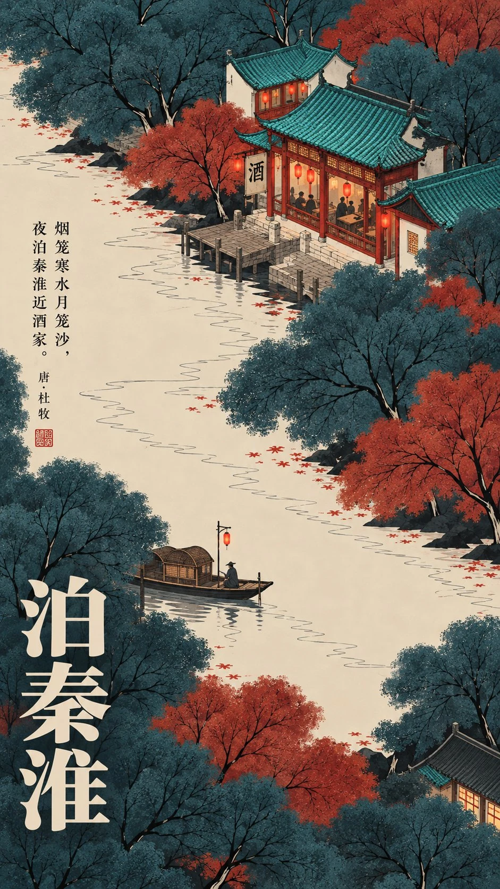
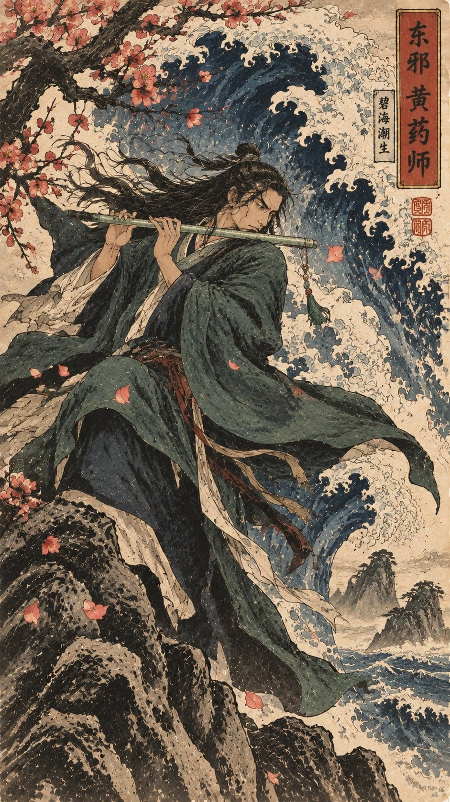

造型
清楚大形与层叠剪影
先读清主要轮廓，再用层叠形状解释细节。
观察依据与英文描述
圆盘、山体与树冠在四图中都先以大形成立，局部细纹随后补充。
Preserve the source subjects and structure, simplifying forms into clear large contours and layered silhouettes
参考案例 · AS-011
Paper-relief-inspired · East Asian Fantasy Landscapes
作者未核实
四张竖幅以灰黑山体、米白卷云和橙红天体建立共同语言，再用层叠边缘与顺形曲线制造可触摸的浮雕感。前两张偏线性纸艺：红枫瀑谷繁密、盘云金河疏朗；后两张偏片层纸雕与岩板质感：火山、熔岩与暗色树林形成更强的戏剧张力。最值得借用的是“大色块先抓住视线，细纹再解释形体”，而不是把每个角落都填满纹理。
选择特征，开始创作 →当代装饰性幻想风景；以纸艺与浅浮雕般的视觉效果归类。前两张侧重线性衍纸感，后两张侧重层叠纸雕感与岩板肌理感。
先看三件事：大圆形与曲折水路如何分配注意力，灰黑与橙红如何形成主次，卷曲细线或片层边缘如何产生厚度。图 2 的螺旋云最接近衍纸的盘卷观感；图 3 的粗糙片层更像叠纸或岩板；图 4 则把片层与流线混合。卷云、红日和山体可与东亚装饰风景及浮世绘风景作视觉比较，但不足以认定为传统浮世绘、中国水墨、某位艺术家作品或真实纸雕。这里的“纸艺”“浮雕”均指画面效果。
四张均为用户提供的参考图，按上传顺序收录，保留 JPEG 原字节与完整画幅。图名为本图鉴根据可见内容拟定的描述性名称，不是已核实的原作题名。作者、原始帖文、创作年代、真实材料、制作软件及 AI 参与均未核实；无法凭文件名推断出处，也不把圆形天体或火山识别为特定地点。色盘为视觉近似。背景链接只解释工艺术语与比较语境，不是这四张图的来源。
具体作品中的证据
前景枫枝斜插、后方大圆盘与纵向瀑布形成三层结构；红叶沿两岸反复出现，把视线带回谷底。白水与米白云连接上下，远山变浅又补出空气感，是四张中空间最绵长的一张。可取之处是暖色焦点与冷色环境的统一；需要节制的是左上红叶与天体同时很强，满幅细纹也容易抢走水路的清晰度。
本图鉴拟定的描述性名称，非已核实原作题名。
用户提供 · 作者、原始出处与制作方式未核实
大片暗色天空构成低信息留白，下方明亮河道承担视觉引导，圆盘只在山谷口露出，主次较清楚。云的盘卷、山的长弧与水的流线共享线性语言，却有不同节奏。它适合学习如何用简洁大形承载繁密细节；天空并非真正空白，若细纹对比再降低一些，安静感和主体辨识度会更强。
本图鉴拟定的描述性名称，非已核实原作题名。
用户提供 · 作者、原始出处与制作方式未核实
圆盘与三角形火山形成最鲜明的几何对照，云带横切山坡，熔岩河把远景和前景接起来。与前两张的连续细线相比，这张依靠撕裂般片层、粗糙表面和厚边阴影建立触感。橙色同时分布在天体、火山、河道和树冠，热烈而统一，也容易分散主焦点；迁移时宜决定哪一个暖色块最重要，再收敛其余部分。
本图鉴拟定的描述性名称，非已核实原作题名。
用户提供 · 作者、原始出处与制作方式未核实
上方暗云形成拱形框景，中央山体稳定重心，前景树林把橙色河道夹成清楚的 S 形。它把图 3 的片层表面与图 2 的顺形流线结合起来，圆盘和河道构成上下呼应的暖色双焦点。前景树冠与云层都非常繁密，局部暗部相互粘连；保留河道边缘清晰、减弱次要树冠的纹理，能让行进方向更明确。
本图鉴拟定的描述性名称，非已核实原作题名。
用户提供 · 作者、原始出处与制作方式未核实
七个观察维度
下面是一套可取舍的建议。配色来自本页示例，可以改为沿用原图；形状、构图的表述以保留原内容为前提。
造型
先读清主要轮廓，再用层叠形状解释细节。
圆盘、山体与树冠在四图中都先以大形成立，局部细纹随后补充。
Preserve the source subjects and structure, simplifying forms into clear large contours and layered silhouettes
线条
让线条方向说明起伏与流动，并保留疏密变化。
图 1 的瀑布、图 2 的山体、图 4 的河道都由顺着形体延伸的线条强化方向。
Organize detail with curves following the existing forms and direction of movement, keeping main contours clear and varying the density of secondary lines
色彩
用灰黑托住画面，米白区分层次，橙红集中注意力。
四图都以低饱和灰黑为基底，橙红集中在天体、叶片或河道；分布与面积各不相同。
Use a limited palette of gray-black, rock gray and warm ivory, concentrating a small amount of orange-red in existing important areas of the source
光影
用轻微边缘亮部与遮挡阴影表现厚度。
卷云、山石与树冠的边缘具有亮暗分离，像薄层在底面上略微隆起。
Create a low-relief appearance with soft side lighting, small edge highlights and shallow overlap shadows while retaining the source’s value hierarchy
构图与空间
保留原构图，把已有路径或轮廓组织为前后联系。
图 1 的瀑谷、图 2 的金河和图 3、4 的熔岩河连接前后景，两侧山林构成框景。
Preserve the source composition and viewpoint, connecting foreground and background through existing paths and contours, with clear overlaps and quiet areas
笔触与肌理
采用细密但有节制的纸条般隆起纹理，适合前两张的观感。
图 1 的线性山石和图 2 的螺旋盘云显示细条般连续边缘，不证明实际材料。
Use simulated paper-art textures of continuous fine strips and coiled low-relief forms, varying direction and density by subject and keeping major contours uncluttered
氛围
让稳定大形、节律纹样与少量强对比形成统一气质。
四图的重复曲线和大圆形带来秩序感；图 1、2 较静谧，图 3、4 因火山与熔岩更紧张。
Create a solemn, rhythmic fantasy atmosphere, keeping decorative details subordinate to the overall order
四图都依靠大圆形、山谷叠层、卷云和弯曲路径组织竖幅，但真正把它们连成一组的是表面厚度、线条节律与有限配色。“东方幻想景观”是便于检索的视觉描述，不等同于已确认的国别、年代或流派。与 AS-009、AS-010 的关联用于比较装饰构图和流动线条，不表示同一作者或确切传承。
图 1、2 以连续隆起的细线为主，图 2 的盘卷云尤像衍纸。衍纸工艺通常把窄纸条卷曲、弯折后组成形状；这里只借用该术语描述观感，参见下方波士顿美术博物馆工艺说明。图 3、4 更强调不规则片层、边缘厚度和叠放阴影，图 3 岩板感最强，图 4 则保留大量顺形流线。
灰黑负责承托，米白负责分层，橙红负责吸引注意；图 1 额外用红叶建立重复节奏。图 2 的河道亮而柔和，其他三张更靠高饱和暖色制造冲击。可迁移的是颜色的角色和面积关系，而不是必须出现太阳、熔岩或红枫。
山体遮挡、近大远小与明暗递进提供景观纵深；细小边缘阴影则把整个画面变成像叠放在同一底板上的装饰物。两种空间感同时存在。图 1 的远山较轻，空气感更强；图 3、4 的片层界面更重，更像可触摸的舞台布景。
图 2 的上半部提供最多视觉休息，其余三张的细节覆盖更密。欣赏时可以先把图缩小：仍然能读清的圆盘、山体和河道，就是结构骨架。创作时先建立这层骨架，再把高对比纹理留给少数重要区域；云与水不必和岩石一样粗重，叶片也不必逐片强调。
迁移到自己的风景照片时，先保留原有山水、树木、建筑和视角，再把对象分成清楚的大轮廓、前后层次与少量强调色。按原图选择“连续细线”或“片层边缘”作为主肌理；不要同时把两套纹理拉满。学习图 2 的疏密节奏、图 1 的冷暖与远近、图 3 的圆形和三角形对照、图 4 的曲线引导。参考中的红日、火山、熔岩和红枫无需随风格一起加入。
避免把“东方”理解成固定国别，把圆盘与锥形山直接命名为富士山景观；不要凭衍纸般纹理断言真实手工工艺。构图上避免天体、树冠与河流同样抢眼，肌理上避免所有表面使用同一密度；尤其要区分云、水、叶与岩石。图 1 的红叶和图 4 的暗树林都适合适度简化，以维护主要路径与层次。
这里说明视觉语言的联系，不据此判断历史归属或原作作者。

作者未核实
这组图把古诗中的一个瞬间放进狭长画幅：密集树冠围出河道、小径或白墙，视线沿浅色空隙缓缓移动，最后停在独钓、指路、停泊、荷尖蜻蜓或越墙花枝上。它的长处是用“大色块—小叙事—细密纹理”建立远近观看的层次；青绿与朱红最鲜明，蓝灰雪景、桃粉花海和荷塘绿调则证明，同一构图语言可以承载不同季节。作为海报，系列统一、主题易读；作为诗意插图，部分画面的华美与热烈也会减弱诗句中的清寒、怅惘或今昔之感。

作者未核实
这组竖幅人物插画以黑色轮廓、有限的哑光设色、卷浪、竖排题签和米黄旧纸效果建立浮世绘感，再把手掌、巨剑、头发和衣带推向观者，形成现代武侠动作海报的冲击力。系列统一性很强，乔峰的掌与龙、周伯通的双手与竹、黄药师的笛与海浪、杨过的剑与雕，又用不同物件提示人物身份。最值得学习的是“大动作—大色面—流动细线”的组织；主要不足是满幅裂纹与碎斑削弱疏密，部分黑发、衣袍、羽翼和山石相互粘连。四张中，黄药师的动静对照与色彩分区最突出，周伯通的表情与明暗分离较鲜明。
逐图出处与尚未确定的信息见各图说明；背景资料不自动成为本图的作者证据。